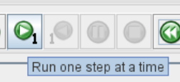
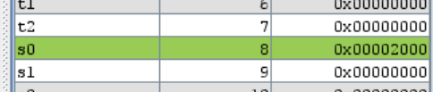
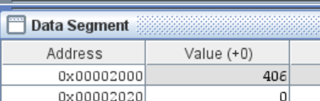
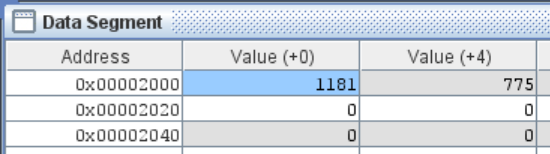
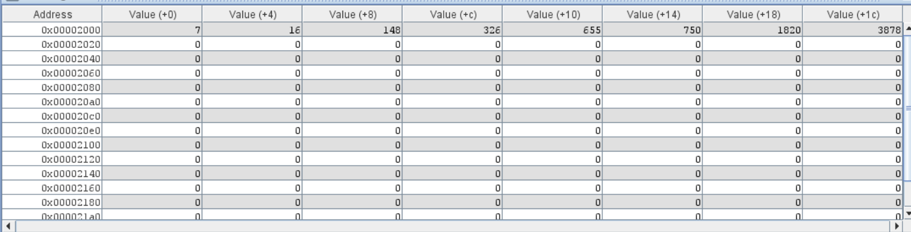

Lab 4: Introduction to RISC-V Assembly
Take-Home Assignment
This manual includes a take-home assignment, worth 8 points. For each question, you will produce a separate .asm file. Zip up all the files into one .zip archive and upload it to Canvas.
Introduction
Welcome back to CS2100DE! This week, we are going to give Vivado a rest, and take up something new and different: RISC-V assembly language programming. Now that we have the background knowledge of logic and design that we need, we can talk about the meat and potatoes of this course: computer organization and architecture.
What is an ISA?
We talked about the definition of an ISA in the lectures - it's a layer of abstraction between the programs we write and the hardware that they run on.
CPUs are complicated devices, and having to think about how to use every single component inside them individually would be a nightmare. Instead, each CPU has an associated Instruction Set Architecture, or ISA. It defines how instruction words are to be interpreted by the CPU, and what each instruction should do.
Importantly, an ISA does not define or describe the underlying hardware that performs the instructions. That is the microarchitecture. The ISA only defines the instructions and what the results should be.
For example, the device you're reading this on is probably using either the AMD64 (or x86_64) ISA, or the ARMv8-A ISA. The former is used by Intel and AMD CPUs like you might be using on your laptop or desktop, while the latter is used by Apple, Qualcomm and others to build system-on-chips like the M-series (seen in newer MacBooks) or the Snapdragon series (seen in many phones and some new laptops). A program written for an Intel Core i7-12700 will run on an AMD Ryzen 9 3950X, because they share the base ISA of AMD64.
A note on ISA extensions
While CPUs using the same ISA are mostly cross compatible with each other, the story becomes slightly complicated when considering ISA extensions. As the name implies, an ISA extension is an optional, additional set of instructions that can be implemented on a CPU if the manufacturer desired. Different CPUs with the same base ISA can implement different ISA extensions, which can make cross-compatibility less straightforward.
A contemporary example is the AVX-512 extension for x86_64. Programs compiled to use the AVX-512 extension can use extra instructions, which are not available on CPUs that do not implement this extension and therefore won't run on such CPUs. The Stockfish chess engine, for example, has different versions depending on which ISA extensions your particular CPU implements.
Strictly speaking, AMD64/x86_64 is also an ISA extension to x86. Code written for AMD64 ("64-bit programs") will not run on x86 CPUs. However, code written for x86 will run on CPUs with the AMD64 extension.
What's RISC-V?
RISC-V is a new, modern CPU architecture designed from the ground up for today's needs. Existing ISAs such as x86_64 and ARM are proprietary, and are prohibitively expensive and tedious to use in your own products. If, for example, we want to build a new chip with an ARM CPU, we would need to pay licensing fees and royalties to ARM. This makes the process of designing a new chip prohibitive for companies or organizations without huge pockets, such as us :)
RISC-V was developed by UC Berkeley, and released under the BSD License, making it free (as in "free speech"). This means that a small startup, or a hobbyist, or a student, can use the RISC-V ISA in any way they please, including modifying and redistributing it. Thus, we can use the RISC-V ISA to develop our own CPU on our Nexys 4: which, believe it or not, is what we're going to achieve at the end of this course.
RISC-V Extensions
RISC-V also has a few extensions available, such as Multiply, Floating-Point, Atomic and Vector. In this course, we will implement the base integer RISC-V ISA, or RV32I for short.
As the name implies, RISC-V is a Reduced Instruction Set Computing (RISC) architecture. Today, the lines between RISC and CISC (Complex Instruction Set Architecture) are blurred, but the biggest differentiator is that CISC architectures typically have fewer general-purpose registers, and allow instructions to perform logical operations on values in memory.
Memory
We just talked about CISC architectures being able to perform operations on values in memory. But what exactly is the "memory"?
When we talk about memory in this course, we typically mean the system memory, or main memory. This is usually the RAM (and ROM) on a computer. Memory is used to store programs and variables.
We may have many bytes (in modern computers, probably billions of bytes) of memory. Each byte of memory has an address, which is simply a number. In 32-bit architectures, the addresses are 32 bit numbers. Thus, we can address a maximum of 4 gibibytes of memory uniquely. You can think of the memory as a long list of numbers, and the indices of each number is the address
When there is a will, there is a way
There are clever ways that people used to access more than 4 gibibytes of memory on a 32-bit system. One popular one is Physical Address Extension. And, since our memory is not byte or half-word addressable anyway, and the two least significant bits of the address are ignored, we could potentially have 4 gibiwords of memory, or 16 gibibytes, by using all 32 bits and simply assuming there are two additional zeroes at the end of every address.
By the way, "gibibyte" is not a typo: a "gigabyte" is a billion bytes, or 1*10^9 bytes. A gibibyte is 1*2^20 bytes. Gigabyte is shortened to GB, while Gibibyte is shortened to GiB. Most people always use Gigabyte, and in fact macOS uses "Gigabyte" to refer to gibibytes. But, that's technically incorrect.
Registers
In last week's lab, we talked about how registers are implemented with D Flip Flops on our Xilinx FPGAs. However, at an architecture level, a "register" isn't necessarily a flip-flop, it is just a memory element that can be accessed directly from the CPU. This is in contrast to system memory, where the CPU must use addresses to access areas of memory. The RISC-V ISA specifies 32 registers that programs can use, numbered x0 through x31.
x0 is a special register as it is read-only, and always contains the value 0. We discussed in the lectures that this allows us to perform move operations without a separate instruction.
x1 through x31 can be used to store any 32-bit number. Remember that "data types" are merely a software construct, which do not exist at the architecture level, and certainly not at the hardware level. The instructions must be chosen correctly depending on what we've stored in the registers. At the end of the day, a number is a number, at the architecture level.
All the registers have a name that describes the function they should be used for. The functions are described in the RISC-V Application Binary Interface (ABI) specification. The ABI describes how an operating system, such as Linux, running on a RISC-V CPU should use the registers. Here is a table showing what each register is used for:
Table of RISC-V registers (uncollapse this box)
Register Number |
Register Name |
Function |
|---|---|---|
x0 |
zero |
Always zero |
x1 |
ra |
Return address |
x2 |
sp |
Stack pointer |
x3 |
gp |
Global pointer |
x4 |
tp |
Thread pointer |
x5 |
t0 |
Temporary register 0 |
x6 |
t1 |
Temporary register 1 |
x7 |
t2 |
Temporary register 2 |
x8 |
s0/fp |
Saved register 0 / Frame pointer |
x9 |
s1 |
Saved register 1 |
x10 |
a0 |
Function argument 0 / Return value |
x11 |
a1 |
Function argument 1 / Return value |
x12 |
a2 |
Function argument 2 |
x13 |
a3 |
Function argument 3 |
x14 |
a4 |
Function argument 4 |
x15 |
a5 |
Function argument 5 |
x16 |
a6 |
Function argument 6 |
x17 |
a7 |
Function argument 7 |
x18 |
s2 |
Saved register 2 |
x19 |
s3 |
Saved register 3 |
x20 |
s4 |
Saved register 4 |
x21 |
s5 |
Saved register 5 |
x22 |
s6 |
Saved register 6 |
x23 |
s7 |
Saved register 7 |
x24 |
s8 |
Saved register 8 |
x25 |
s9 |
Saved register 9 |
x26 |
s10 |
Saved register 10 |
x27 |
s11 |
Saved register 11 |
x28 |
t3 |
Temporary register 3 |
x29 |
t4 |
Temporary register 4 |
x30 |
t5 |
Temporary register 5 |
x31 |
t6 |
Temporary register 6 |
RISC-V assembly language
Assembly language is not a single language. Every ISA has its own assembly language, which is just a human-readable, text-based version of the machine code that the CPU will run later. So, RISC-V has its own assembly language, and so does ARMv8-A, x86-64, IA-64, MIPS, Z80...
In assembly language, every line has a one-to-one mapping to a set of one or many machine language instructions. That is, one line of assembly may map to 3 lines of machine code, but it will always map to all three of those lines.
RISC-V assembly language has three main types of instructions: Logical (or Data Processing), Memory, and Branch. Let's look at each of these types in more detail. Note that we will not go through every instruction; this is merely meant to refresh our memory. The lecture notes are much more detailed, and this document, courtesy of University of Cambridge contains a very extensive reference.
Logical and Arithmetic Instructions
Logical and arithmetic instructions perform some logical and arithmetic operation, respectively, on its operands.
An example of an arithmetic instruction is:
add x10, x11, x12 # equivalently: add a0, a1, a2
This instruction takes three operands: a destination register, and two source registers to be added. It stores the sum of the numbers stored in x11 and x12, to the register x10. The operands are separated with commas in RISC-V assembly.
For instructions ending with the letter suffix i, the third operand isn't a register, but an "immediate" (constant) value. For example:
addi x10, x11, 4
This instruction adds 4 to the content of x11 and stores it in x10.
The destination and source register can be the same, somewhat like the += operation in many programming languages:
addi x10, x10, 4 # somewhat like writing x += 4 in Python
This instruction simply adds 4 to the content of register x10.
The x0 or zero register can be used to load immediate values into a register:
addi x10, x0, 25
This instruction loads 0+25=25 into x10.
Most arithmetic and logic instructions need three operands: a destination and two sources. However, there are two exceptions:
neg x10, x11 # x10 will be set to -x11
not x10, x11 # x10 will be set to the bitwise negation of x11
neg is the arithmetic negation function and performs a two's complement negation. not is the binary negation function and flips every bit (i.e. performs a one's complement negation).
Memory Instructions
Memory instructions load or store data from and to memory.
We can load and store data at a memory address given by a register:
lw x10, 0(x11) # Loads data from memory address stored in x11
sw x10, 4(x11) # Stores data to (memory address stored in x11) + 4
There also exist lh (load half-word), lb (load byte), sh (store half-word) and sb (store byte), to load/store the least significant 16 (half-word) or 8 (byte) bits.
We also have some special loading instructions:
lui x10, 1234 # Used to load 1234 into the upper 20 bits of x10
auipc x10, 1234 # Used to load 1234 into the upper 20 bits of x10, then add the value of the Program Counter
Don't worry if auipc in particular doesn't make sense yet. We will get to it later.
Branching Instructions
There are two types of branching instruction in RISC-V assembly: conditional, and unconditional. As the names imply, conditional branches check a condition, and only branch if that condition is satisfied. Unconditional branches always run.
Conditional branches are used as follows:
beq x10, x11, label # if the content of x10 is equal to the content of x11, jump to the label specified.
Here, the condition is eq, meaning "equal". There are many more conditions, such as ne (not equal), gt (greater than) and more.
A note on labels
Labels do not actually exist in machine language, and are a feature the assembler provides for us. Our programs are stored in memory, and labels are simply human-readable ways to refer to the location of specific instructions. In reality, this syntax for branching is a pseudoinstruction, and the assembler will calculate an immediate offset to be added to our program counter instead. Don't worry if this doesn't make sense either; we will get to it later. We promise.
Unconditional branches are used as follows:
j label # jump to the label specified
jal and jalr will not be covered yet. We will learn what they do later in the labs.
But I want to learn what jal and jalr do anyway!
When we perform a function call in, say, Python, we know that we temporarily go to a different part of the program, run the code there, and come back. However, we need to remember where to come back to.
jal stands for "Jump and Link", and the syntax is jal x1, label. This will jump to the label, but it will store the current program counter in x1. Fun fact: j is actually a pseudoinstruction. j label is translated to jal x0, label by the assembler.
jalr stands for "Jump and Link Register", and it is used to jump to the address specified by the sum of a register and an immediate offset.
To return from a function, we can use jalr x0, x1, 0, or the pseudoinstruction ret which is equivalent.
Getting started with RARS
For these activities, we need to download RARS. Happily enough, it doesn't need to be installed, but it does need you to have Java 8 or newer installed. If you have Vivado installed on your computer, you already have Java installed. (Mac users rejoice: 3 billion devices, including your shiny new MacBook, run Java :P)
On Windows and macOS, you can start RARS by simply double-clicking the downloaded .jar file. On Linux, you may not be able to run it like this, but simply open a terminal and run java -jar filename.jar where filename is the name of the jar file you just downloaded. RARS should open to a window like this:

The RARS home screen
Opening and assembling an asm file
From the RARS home screen, click File -> Open, and browse to the location where you have downloaded riscv_asm_sample.asm
Tip
The file browser in RARS is rather tedious to use. We recommend creating a blank folder, in an easy-to-navigate location, for just your asm files. If you keep your asm files in a folder with other files, we recommend starting their names with asm, to make them appear higher up alphabetically.
Once the file is open, we see that some buttons become highlighted and clickable:

The sample file opened in RARS
From here, we need to make some changes to our settings for the purposes of this course. Select "Settings" -> "Memory Configuration". The following window will pop up:

The RARS "Memory Configuration" popup
Here, choose "Compact, Text at Address 0", and click "Apply and Close". This means that the .text segment, where our code goes, should live at memory address 0x0. The .data segment, where our variables live, will then be starting at address 0x2000. When we select the "Compact, Text at Address 0" layout, the popup shows us the detailed memory map explaining this:

The memory map we have selected, indicating that .text starts at 0x0 and ends at 0xffc. It also shows that .data starts from 0x2000.
Warning
Setting up the memory configuration correctly is very important. It will make our life much simpler when it comes time to finally implement our CPU. If we do not select this correctly, our program will not run on the CPU at all.
To run the program in the simulator, we must first assemble it. Click on the "Assemble" button:

The "assemble" button in RARS
Once the file is assembled and ready to execute, we will see the "Execute" tab open automatically:

The assembled program in the "Execute" tab.
The important parts of the window are:
-
The "Text Segment" - this is the code that we have written, which we can execute all at once, or line by line. It also contains the machine code equivalent of each line of assembly (this should be familiar from this week's lecture). We will dive more into machine code in Week 7. The line highlighted in yellow indicates the line that will be executed next.
-
The "Data Segment" - this is where our variables and memory can be monitored. We can see the contents of the entire memory in a tabular form.
-
The "Registers" - this is a live view of the contents of each register.
Executing the code
We can run the code all at once using the "Run" button. However, in this case, it'll be much more useful to run the code line by line. We can use the "Run one step at a time" button to do this:

The "Run one step at a time" button
Let us run the first line of our code:
2 | |
To observe the effect of this instruction, we must direct our attention to the "Registers" tab:

Register s0 loaded with 0x2000.
The next instruction is:
3 | |
This will load the value stored at 0x2000 into the register s1. Observe the memory address 0x2000. We use line 20 of the code to set it to 406:
20 | |
Indeed, the "Data Segment" tab shows this:

The value 406 stored at memory address 0x2000
Tip
Untick (or tick) the "Hexadecimal Values" checkbox at the bottom of the "Data Segment" tab to switch the values in the "Data Segment" and "Registers" tabs between hexadecimal and decimal. Decimal may be useful for readability.

So, once we execute line 2, we see that s1 is updated as follows:

Register s1 loaded with the content of the memory at address 0x2000.
Execute the next few lines of load instructions and observe the changes in the registers. We shall take the liberty of skipping forward to line 9, where we can observe a store instruction.
sw s5, 0(s0) # Take the value of s5, store at the address specified in s0
At this point, the value stored in s5 is 1181:

So, once the store instruction is completed, we expect memory address 0x2000 (the address stored in s0) to be updated to 1181. Indeed, this is the case:

Continue to execute the program line by line. Try to predict the outcome of the lines 11 through 14, and then execute it to see if your understanding is correct. Observe as the branch instruction branches back to the label loop if the condition is met.
Warm-up activity
In loop.asm, we have two memory addresses defined: N and ARRAY. Starting with memory address ARRAY, increment the value of N consecutive memory addresses by 2, 4, 6, ... That is, the address ARRAY should be incremented by 2. ARRAY+4 should be incremented by 4 and so on. This should be repeated N times.
To help you, we have included two lines of code at the top, to load in N and the address of the first element in ARRAY, into s0 and s1 respectively:
2 3 | |
As the file name implies, you should use a loop to solve this question. By the end of execution, your data segment should look like this:

The expected result of your code, in the memory (data segment).
Question 1: Froot Loops 2.0 [2 points]
Finish the code in loop.asm.
Main Assignment
In assignment4_2420.asm, we have defined two values: N, and ARRAY. ARRAY is an array of N items. Your task is to sort ARRAY in place, using a bubble sort. Other sorting algorithms will not be accepted. The sorted array should replace the original array in memory.
If you have taken CS2040DE, you should be familiar with a bubble sort. If not, the absolutely legendary Dr. Steven Halim from SoC has a great tutorial on sorting algorithms available on visualgo.net.
When your program reaches the jal halt line, it should be finished. At that point, we will check the memory corresponding to the label ARRAY. It should contain the same elements as the original array, but sorted in ascending order.
The expected outcome of the test case provided is the following:

The expected outcome from the test case we provided in assignment4_2420.asm
We will test this program with different test cases. Make sure your program can work on a variety of different inputs.
Question 2: The Sorting Hat [6 points]
Complete your code in assignment4_2420.asm.
Here are some hints for you:
- Start by loading the value
N, and the address ofARRAYinto two registers. - Set up the variables you will need, e.g. counters, in the saved registers. Write comments to remind yourself what each of the variables is supposed to do.
- Use a label to be able to branch back when you need to repeat an operation.
Concluding remarks
Congratulations on completing Lab 4! Remember to upload your solutions to Canvas before the deadline. If you need help, the Discussions page is the place to go.
That's the last of the graded labs. In the second half of the semesters, the labs will be used for working on the project.
What we should know
- What an ISA is, and why the RISC-V ISA is particularly cool.
- How and why assembly languages are used, and what makes them different to other languages like C or Python or JavaScript.
- The different types of instructions we can use in RISC-V architecture.
- How to use RARS to run our RISC-V assembly programs.
- How to develop a full, somewhat useful, program with just RISC-V assembly.